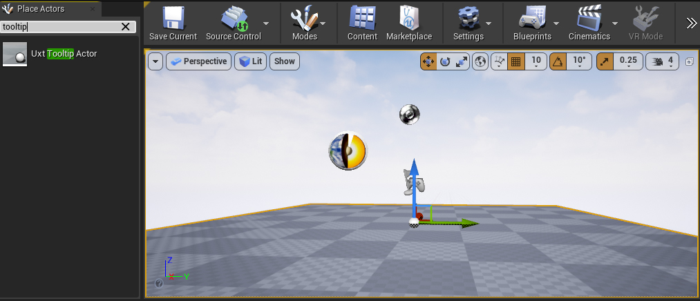

Tooltip
Tooltips are used to convey a hint or extra information upon closer inspection of an object. They can be used to annotate objects in the physical environment.

How to use a tooltip
There is an AUxtTooltipActor can be dragged and dropped in the scene to instantiate a tooltip.

 Once instantiated, the tooltip can point to an actor/component by modifying the Tooltip Target property or calling the SetTarget function. It is also possible to change the tooltip content for any blueprint widget by setting the Widget Class property.
Once instantiated, the tooltip can point to an actor/component by modifying the Tooltip Target property or calling the SetTarget function. It is also possible to change the tooltip content for any blueprint widget by setting the Widget Class property.
 The spline tangents can be modified if you want to change the curve.
The spline tangents can be modified if you want to change the curve.
Public Properties
Tooltip Target
Property to point at an actor/component. Clearing the component property to none should result in binding the tooltip to the center of the actor. The component name defaults to DefaultSceneRoot.
Widget Class
This property allows the user to set any blueprint widget class so that the tooltip renders it. When cleared, the tooltip will default to some default text.
Anchor
The anchor is a scene node that is used to offset the end point of the spline going to the target. Start Point is at tooltip location and End Point is at the target's location.
Margin
The Margin property that can be used to add space between the text and the border of the back plate.
Dynamic Tooltips
Having too many tooltips can get costly. This is a component for a tooltip that can be spawned dynamically based on preset events.
How to use a dynamic tooltip
The dynamic tooltip is used by creating a TooltipSpawnerComponent and adding it to the actor that you want the tooltip to point at. The following properties will modify the tooltips behavior.
Public Properties
Appear Type
Parameter to script what will spawn the tooltip.
Vanish Type
Parameter to script what will make the tooltip vanish.
Remain Type
Parameter to script whether the tooltip remains indefinitely or if it uses the Lifetime parameter to timeout.
Appear Delay
Parameter to script a delay before spawning the tooltip.
Vanish Delay
Parameter to script a delay before the tooltip vanishes.
Lifetime
Parameter to script how long the tooltip will be spawned for.
Widget Class
Parameter to script what widget class to use on this tooltip.
Pivot
An offset to specify where the tooltip will be spawned.
Widget Scale
Scales the widget.
OnShowTooltip
Delegate to drive OnShow events.
OnHideTooltip
Delegate to drive OnHide events.